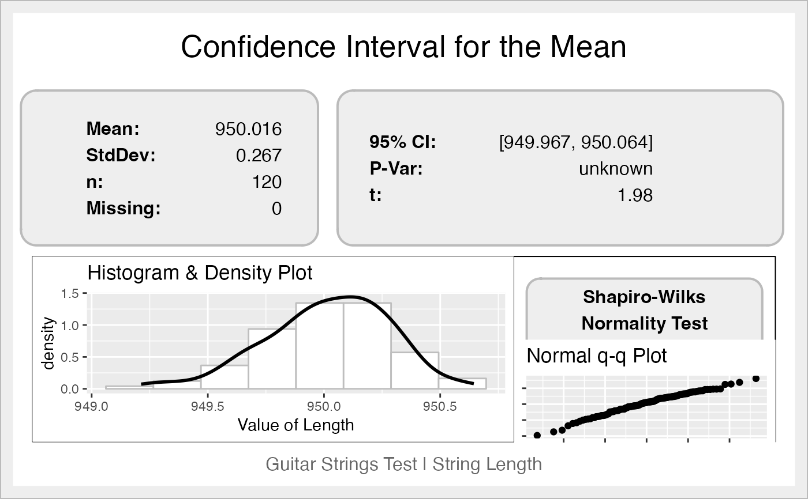

Computes a confidence interval for the mean of the variable (parameter or feature of the process), and prints the data, a histogram with a density line, the result of the Shapiro-Wilks normality test and a quantile-quantile plot.
ss.ci(
x,
sigma2 = NA,
alpha = 0.05,
data = NA,
xname = "x",
approx.z = FALSE,
main = "Confidence Interval for the Mean",
digits = 3,
sub = "",
ss.col = c("#666666", "#BBBBBB", "#CCCCCC", "#DDDDDD", "#EEEEEE")
)A numeric vector with the variable data
The population variance, if known
The eqn\alpha error used to compute the \(100*(1-\\alpha)\%\) confidence interval
The data frame containing the vector
The name of the variable to be shown in the graph
If TRUE it uses z statistic instead of t when sigma is unknown and sample size is greater than 30. The default is FALSE, change only if you want to compare with results obtained with the old-fashioned method mentioned in some books.
The main title for the graph
Significant digits for output
The subtitle for the graph (recommended: six sigma project name)
A vector with colors
The confidence Interval.
A graph with the figures, the Shapiro-Wilks test, and a histogram.
When the population variance is known, or the size is greater than 30,
it uses z statistic. Otherwise, it is uses t statistic.
If the sample size is lower than 30, a warning is displayed so as to
verify normality.
Thanks to the kind comments and suggestions from the anonymous reviewer of a tentative article.
Cano, Emilio L., Moguerza, Javier M. and Redchuk, Andres. 2012. Six Sigma with R. Statistical Engineering for Process Improvement, Use R!, vol. 36. Springer, New York. https://link.springer.com/book/10.1007/978-1-4614-3652-2/.
ss.ci(len, data=ss.data.strings, alpha = 0.05,
sub = "Guitar Strings Test | String Length",
xname = "Length")
#> Mean = 950.016; sd = 0.267
#> 95% Confidence Interval= 949.967 to 950.064
#>

#> LL UL
#> 949.9674 950.0640